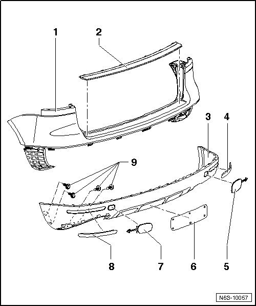
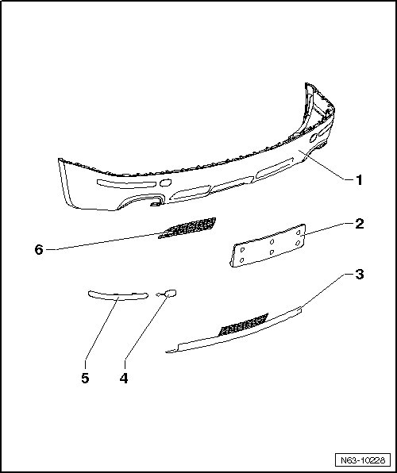
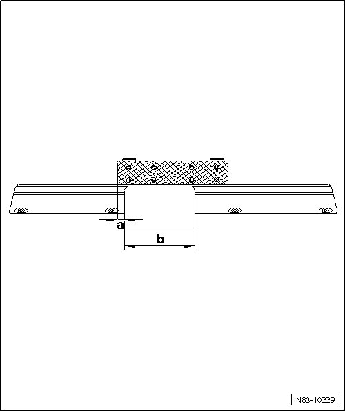

Rear Bumper Attachments
Rear Bumper
Rear Bumper Attachments
• Due to model variations, small deviations must be considered during removal and installation.

1 Cover
• Material - PP/EPDM
2 Chrome strip
• Clipped in cover.
• Only to be removed from removed bumper.
3 Spoiler
• Clipped in and bolted into bumper cover.
• Only to be removed from removed bumper.
• R50 and R-Line spoiler with attachments
4 Right reflector
• Clipped into spoiler.
5 Right towing eye cover
6 License plate bracket
• For vehicles with spare wheel mounting on the rear lid
7 Left towing eye cover
8 Left reflector
• Clipped into spoiler.
9 Bolt
• Quantity: 4
• 1.5 Nm
R50 and R-Line Spoiler with Attachments

1 Spoiler
• Clipped in and bolted into bumper cover.
• Only to be removed from removed bumper.
2 License plate bracket
• For vehicles with spare wheel mounting on the rear lid
3 Cap
• Dimensions for opening AHK (USA only)
4 Towing eye cover
• Left and right
5 Reflector
• Left and right
• Clipped into spoiler.
6 Vent grille
• Left and right
• Also for vehicles with park assist
AHK Opening Dimensions
America only
- Make the opening for the AHK, according to the dimensions, with suitable tools.

1 Dimension - a - = 19.5 mm
2 Dimension - b - = 209.3 mm